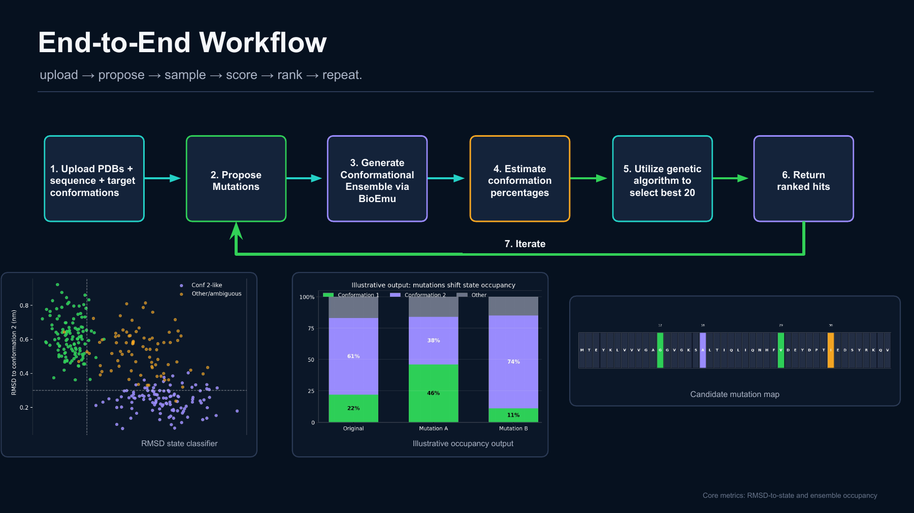
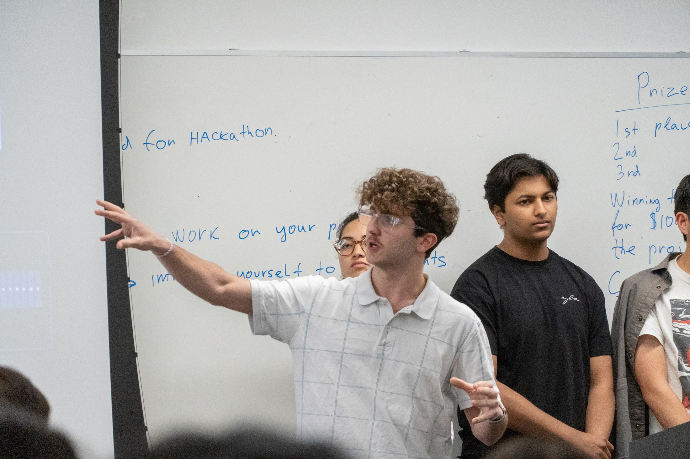
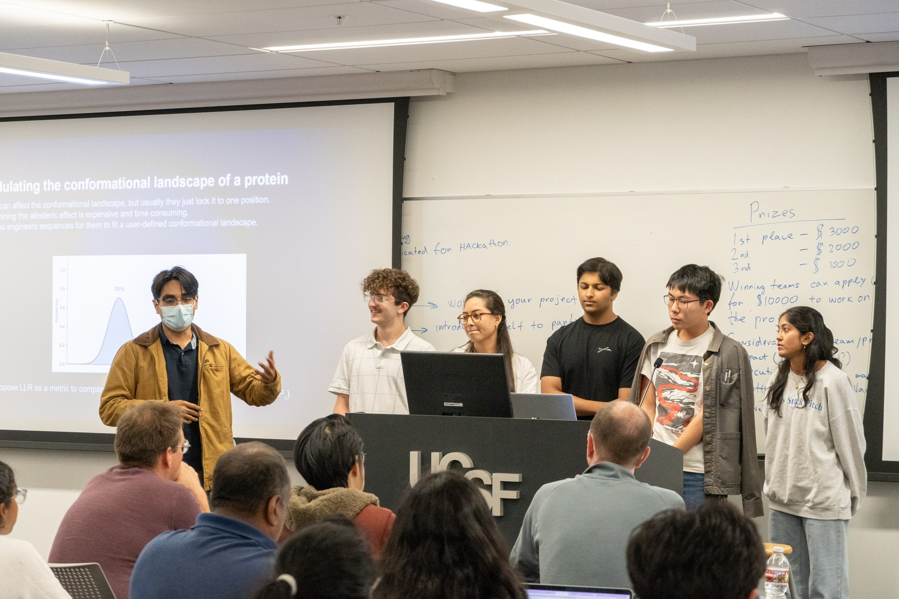
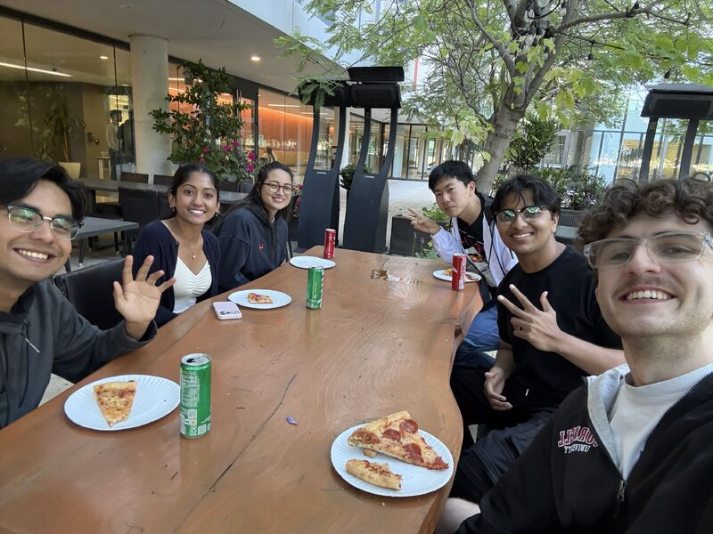
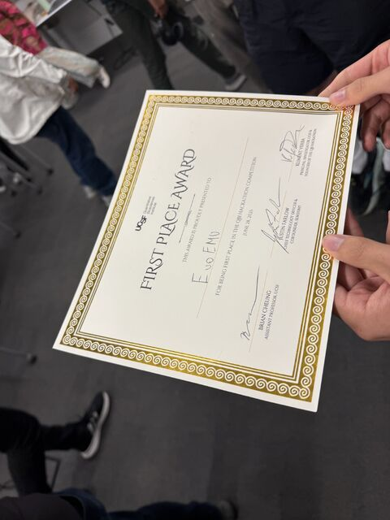

EvoEmu
Our team built EvoEmu at the 2026 QBI Hackathon at UCSF: an in-silico directed-evolution tool for exploring protein sequences that favor a user-defined conformational landscape. We won first place and a $3,000 team prize. Our code is available in an open GitHub repository if you want to check it out.

What we built
Proteins move between different conformations. Our goal was to search for mutations that shift the balance between those states, rather than optimize only for a single static structure.
The workflow starts with a protein sequence and target states, proposes mutations, samples candidate conformations, scores their state populations, and ranks the candidates. A genetic algorithm retains promising variants and repeats the search. The presentation describes both fitting a target state-population ratio and favoring a desired structure.
Technical approach
The repository combines ESM-2-guided mutation proposals, BioEmu structural-ensemble evaluation, and a genetic search. It includes a FastAPI web interface with live updates and ESMFold-based visualization, alongside a command-line workflow. The repository distinguishes its synthetic-scoring demo from real BioEmu runs.
The starting inputs are a protein sequence and two reference structures representing the conformations of interest. The slides describe classifying sampled structures by their RMSD to those reference states and estimating each state’s population. The goal is to tune the balance between the states, rather than simply produce one preferred structure.
The continuation proposal defines that balance using a log-likelihood ratio, LLR = ln(P2/P1), where P1 and P2 are the estimated populations of the two states. A candidate is scored by how close its LLR is to the user’s target. The genetic algorithm keeps promising variants and uses them to seed further rounds of search. The intended output is a set of candidate sequences and a map of the mutations for experimental follow-up.
These are computational predictions. A high ranking does not by itself establish that a variant is stable or that its real conformational balance matches the prediction.
Extending the hackathon prototype
The continuation project focuses on two limitations of the original approach. ESM-2 can suggest substitutions that are plausible in protein sequences, but that does not necessarily mean they will change the balance between conformations. The proposal therefore calls for a mutation-selection approach using sparse-autoencoder features from protein language models to prioritize residues associated with conformational switching.
A second planned improvement is to evaluate conformational shifts alongside predicted protein stability, using ThermoMPNN for stability scoring. We want to avoid selecting a mutation that looks promising in the ensemble model but leaves the protein unable to fold reliably. These are proposed extensions to be implemented and benchmarked, rather than completed capabilities claimed here.
Benchmarking and experimental validation
The proposal identifies KaiB as the initial benchmark: a fold-switching protein with experimentally characterized state populations. Comparing predictions against an existing benchmark comes before using the pipeline to select new variants for experimental testing.
The validation plan then moves from computational search to expressing and purifying selected variants, isotopic labeling, and NMR measurements of their relative state populations. Those measurements would be compared with the predicted population ratios. More specialized NMR experiments could be considered if the states cannot be resolved adequately in the initial measurements.
An important challenge is deciding how to classify sampled structures and handle frames that do not clearly belong to either reference state. Another is measuring the actual computational cost per variant before committing to a larger search. The continuation plan includes pilot benchmarks to test these assumptions rather than treating model output as experimental evidence.
Proposed research roadmap
The proposal lays out a six-month plan:
- First, finalize the population-scoring pipeline and benchmark it on KaiB, then implement and compare the proposed mutation-selection and stability-scoring approaches.
- Next, run the evolutionary searches and select candidates for synthesis, expression, purification, and NMR testing.
- Finally, compare experimental measurements with predictions, investigate discrepancies, and prepare a preprint.
This is a proposed research sequence, not a record of completed milestones or a published paper.
My contribution
I helped brainstorm the idea, ran BioEmu simulations, and bridged the computing and biology sides of the team so we understood one another’s work. I also ran customer discovery to check that we were addressing a real need.
Current status and next steps
Our team was awarded a $10,000 continuation grant to keep developing EvoEmu over the next 6–8 months. We are aiming to turn that work into a publication; the research and validation are still in progress.
Team
Antranig Baghdassarian, Gilbert Shen, Diego Velazquez, Ibrahim Aasim, Nikhila Manikandan, and Imane Jennane.
Photo credits
Presentation photographs courtesy of the QBI event hosts.
View presentation on Google Slides (access may require sign-in) ↗



